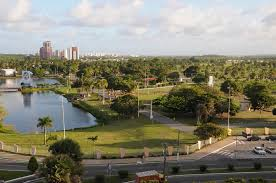

sementeira

O parque pode ser ultilizado pelos aracajuanos e turistas para prática de atividades esportiva e de
lazer,pesquisas ambientais
além de outras atividades em contato com a
natureza. o espaço conta com
parque infantil parque infantil, campo de futebal
quadra poliesportiva, espaço com
aparelhos para exercicio fisicos , pista
para caminhada, quiosques para piquiniques, sanitarios, lagos, e iluminação adequada.
Atrativos do parque da sementeira
- parque infantil
- campo de futrbol
- Quadra poliesportiva
- Aparelhos para exercicios fisicos
- Pista para caminhada
- Quiosques para piquiniques
- sanitarios
- lagos e areas verdes
- iluminaçao adequada para vistas noturnas